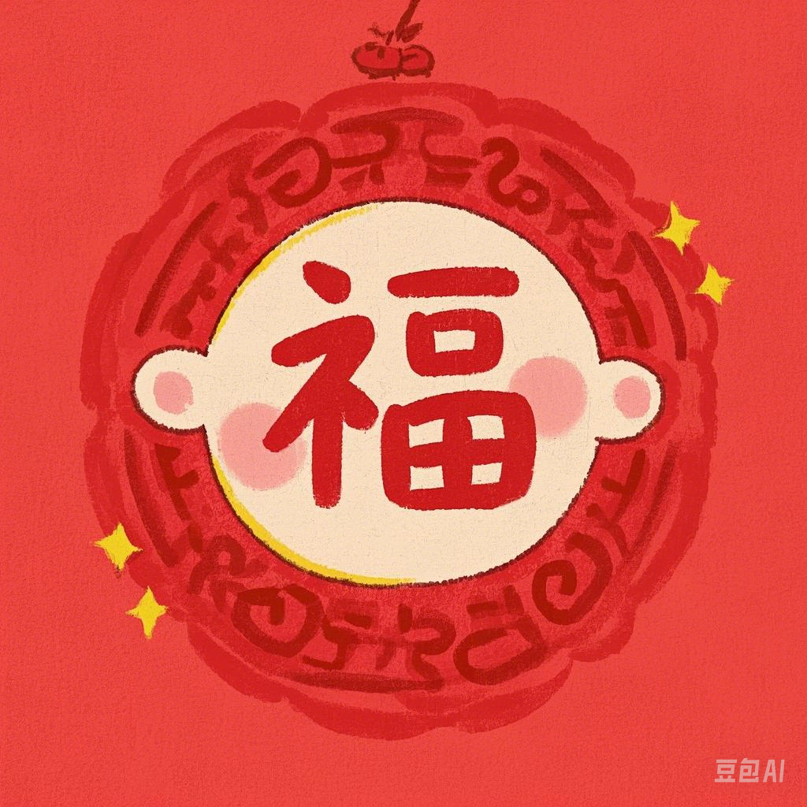

操控呆猫，接取更多的福，以换取更多的积分，从而解锁更多来自呆猫的福利小视频喵！！！
本游戏总共十二个福利小视频，达到一百万积分即可全部解锁喵！！！

小福：基础得分20分
大福：基础得分50分，每获得一个大福增加200%积分获得率（注意：大福的2倍积分效果是呈指数倍叠加的！如果连续获得十个大福，那么积分倍率是1024倍！！！！！！）
操虫棍：获得15秒二段跳能力
双刀：获得12秒加速效果
大剑：获得12秒变大效果
重弩：获得10秒吸取道具效果
太刀：获得12秒冲刺能力（双击方向键触发）
非常强力的冲刺！！！